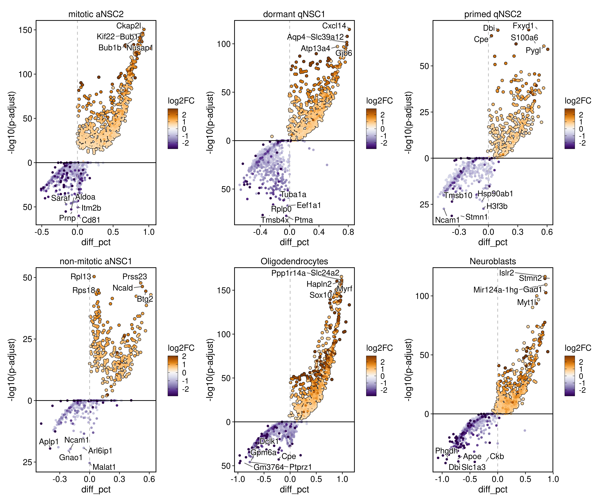
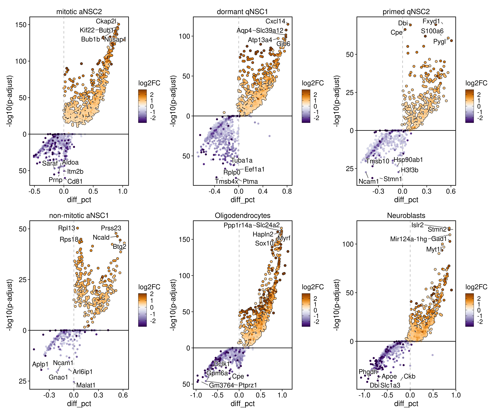

Home
This page is developed for sharing some useful resources for learning R, statistics, data visualization and biological sequence analysis. This is just a place for me to collate some of the best websites/ tutorials that I have found useful during my research. This includes a lot of links and hard work done by the dedicated R community and I just use only a subset of codes that is relevant for my work. In the spirit of learning process, I created these bunch of pages in Quarto document and of course I failed initially, Googled thousand times, tried lots of code chunks and that is the process of learning R. I am adding here some of the plots that I made past few years. You can contact me if you want to collaborate or have queries regarding data visualization.
    |
Workshop: Data Visualization Using R
Workshop material: Workshop slides